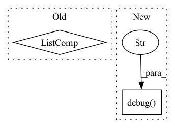

Pattern ID :35768
Before Change
if global_normalization:
log.debug(
"Global Normalization Data Parameters (shift, scale): {}".format(
[(k, v) for k, v in global_data_params.items()]
)
)
// Compute individual data params
local_data_params = OrderedDict()After Change
df_merged, normalize, config_covariates, config_regressor, config_events
)
if global_normalization:
log.debug(
f"Global Normalization Data Parameters (shift, scale): {[(k, v) for k, v in global_data_params.items()]}"
)
// Compute individual data params
local_data_params = OrderedDict()
for df_name, df_i in df.groupby("ID"):
df_i.drop("ID", axis=1, inplace=True)In pattern: SUPERPATTERN
Frequency: 3
Non-data size: 2
Instances Fragment ID: 101803425
Project Name: ourownstory/neural_prophet
Commit Name: bfdc5efcdea28fc7cf82710feda29a0824abb5ea
Time: 2022-09-21
Author: kevinrchen0@gmail.com
File Name: neuralprophet/df_utils.py
M Class Name: AnonimousClass
N Class Name: AnonimousClass
M Method Name: init_data_params(7)
N Method Name: init_data_params(7)
M Parent Class:
N Parent Class:
M File Name: neuralprophet/df_utils.py
N File Name: neuralprophet/df_utils.py
M Start Line: 293
M End Line: 317
N Start Line: 297
N End Line: 313
Before Change
self._check_field("source_field", "target_field")
self.inter_feat, self.user_feat, self.item_feat = self._load_data(self.dataset_name, self.dataset_path)
self.feat_list = [feat for feat in [self.inter_feat, self.user_feat, self.item_feat, self.net_feat] if feat is not None]
self._filter_by_inter_num()
self._filter_by_field_value()
self._reset_index()After Change
self._restore_saved_dataset(saved_dataset)
def _from_scratch(self, config):
self.logger.debug("Loading social dataset from scratch" )
self.dataset_path = config["data_path"]
self._fill_nan_flag = self.config["fill_nan"]
Fragment ID: 101803426
Project Name: rucaibox/recbole
Commit Name: a70337aa12646228c7f41f16a26012ce0f9d12f7
Time: 2020-09-08
Author: houyupeng@ruc.edu.cn
File Name: recbox/data/dataset/social_dataset.py
M Class Name: SocialDataset
N Class Name: SocialDataset
M Method Name: _from_scratch(2)
N Method Name: _from_scratch(2)
M Parent Class: Dataset
N Parent Class: Dataset
M File Name: recbox/data/dataset/social_dataset.py
N File Name: recbox/data/dataset/social_dataset.py
M Start Line: 46
M End Line: 52
N Start Line: 32
N End Line: 71
Before Change
return run_args
def _create_run_file(self, run_file_path, run_args, script_path):
script_cli_args = [value for entry in run_args.items() for value in entry]
script_execution_call = (
f"python3 {str(script_path)}"
" \\\n\t"
(" \\\n\t".join(script_cli_args))After Change
return run_args
def _create_run_file(self, run_file_path, run_args, script_path):
logging.debug("creating run file..." )
script_cli_args = [f"{key} {str(value)}" for key, value in run_args.items()]
script_execution_call = (
f"python3 {str(script_path.name)}" +
" \\\n\t" + Fragment ID: 101803421
Project Name: hpi-xnor/bitorch
Commit Name: 25da945846e5f52901d336d7d52d20b28947a25b
Time: 2021-08-19
Author: overkill98@web.de
File Name: examples/image_classification/utils.py
M Class Name: ExperimentCreator
N Class Name: ExperimentCreator
M Method Name: _create_run_file(4)
N Method Name: _create_run_file(4)
M Parent Class:
N Parent Class:
M File Name: examples/image_classification/utils.py
N File Name: examples/image_classification/utils.py
M Start Line: 193
M End Line: 198
N Start Line: 236
N End Line: 248